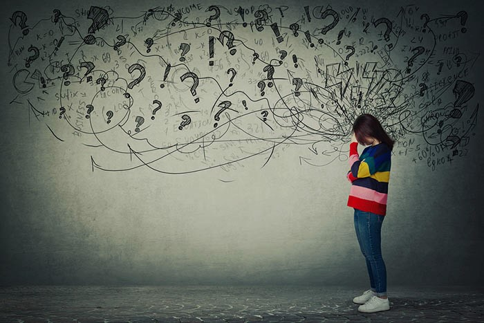
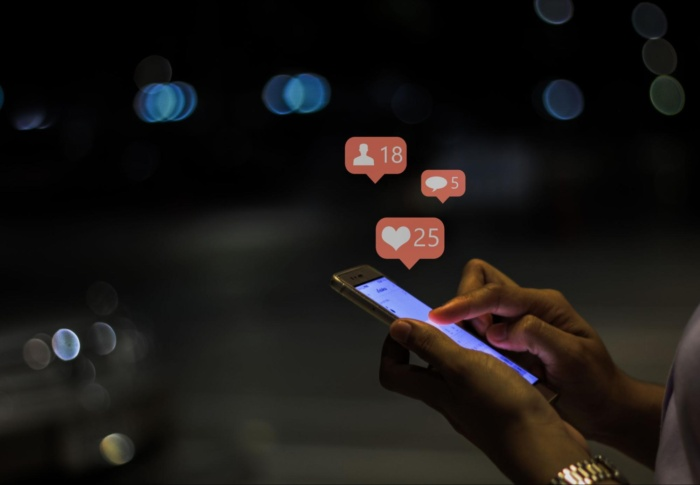

99% dos dos jovens portugueses utilizam a Internet.
86% estão nas redes sociais.
O que é que isto implica na saúde mental dos jovens?
LER MAIS
O que é a saúde mental?
A saúde mental tem a ver com o estado emocional que a pessoa se encontra ao lidar com as situações do quotidiano, o stress e a motivação. Está relacionada com a forma que o indivíduo conjuga os seu desejos, motivações e ideias.
Saúde mental é conseguir conviver consigo próprio e com os restantes.
Impacto das redes sociais

Ansiedade
Isolamento
Pressão Social
Esgotamento
Obsessão com o corpo
Cyberbullying
Cyberbullying é uma forma de bullying praticada através das redes sociais e que sobretudo afeta os mais jovens. Dentro dela incluem-se o violência verbal, psicológica e/ou física. Muitas vezes quem pratica cyberbullying fá-lo por veem os seus amigos envolvidos e repetem sua atitude.
O cyberbullying impacta negativamente a saúde mental da vítima, levando a que desenvolva fobia social, falta de autoestima, ansiedade e depressão, transtorno de pânico e até pode levar ao suicídio.
Como tal, é importante ter atenção a quaisquer sinais a vítima possa apresentar e agir para que vida da vítima não seja impactada. É essencial que esteja presente e criar conversas onde a vítima se sinta livre e segura para desabafar.
E então?
Será que há benefícios em usar as redes sociais?
Go to the Next Section
O maior benefício das redes sociais é a criação de laços sociais a longa distância, alguns deles duradouros. Também oferecem espaços seguros onde o indivíduo possa desabafar sobre situações da sua vida.
As redes sociais também oferecem conteúdo informativo e divertido para todas os utilizadores.
Como evitar o negativo das redes sociais?
Equilibrio Online-Vida Real

Sobrecarregado de Informação? Desconecte-se